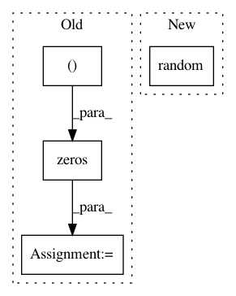

0940b083d3cdd0db46c867523e9a58b196e6e9d5,python/test/function/test_assign.py,,test_assign_forward_backward,#Any#Any#Any#,30
Before Change
from nbla_test_utils import function_tester
rng = np.random.RandomState(seed)
inputs = [rng.randn(2, 3, 4).astype(np.float32) * 2 for _ in range(2)]
grads = np.zeros((48,))
function_tester(rng, F.assign, lambda dst, src: src, inputs, ref_grad=lambda *args: grads,
ctx=ctx, func_name=func_name, atol_f=1e-3, atol_b=1e-2)
After Change
assign = F.assign(dst, src)
src.d = np.random.random((2, 3, 4))
assign.forward()
assert np.allclose(dst.d, src.d)
In pattern: SUPERPATTERN
Frequency: 3
Non-data size: 4
Instances
Project Name: sony/nnabla
Commit Name: 0940b083d3cdd0db46c867523e9a58b196e6e9d5
Time: 2019-01-09
Author: takuma.seno@gmail.com
File Name: python/test/function/test_assign.py
Class Name:
Method Name: test_assign_forward_backward
Project Name: lmcinnes/pynndescent
Commit Name: a00c0c09efcabd5b82fcc12320e2ea36ef755de3
Time: 2019-06-11
Author: leland.mcinnes@gmail.com
File Name: pynndescent/tests/test_pynndescent_.py
Class Name:
Method Name:
Project Name: pavlin-policar/openTSNE
Commit Name: 46379cefade313fee9fa99c8a6ebb62668918f82
Time: 2018-10-28
Author: pavlin.g.p@gmail.com
File Name: fastTSNE/tsne.py
Class Name: TSNEEmbedding
Method Name: generate_partial_coordinates